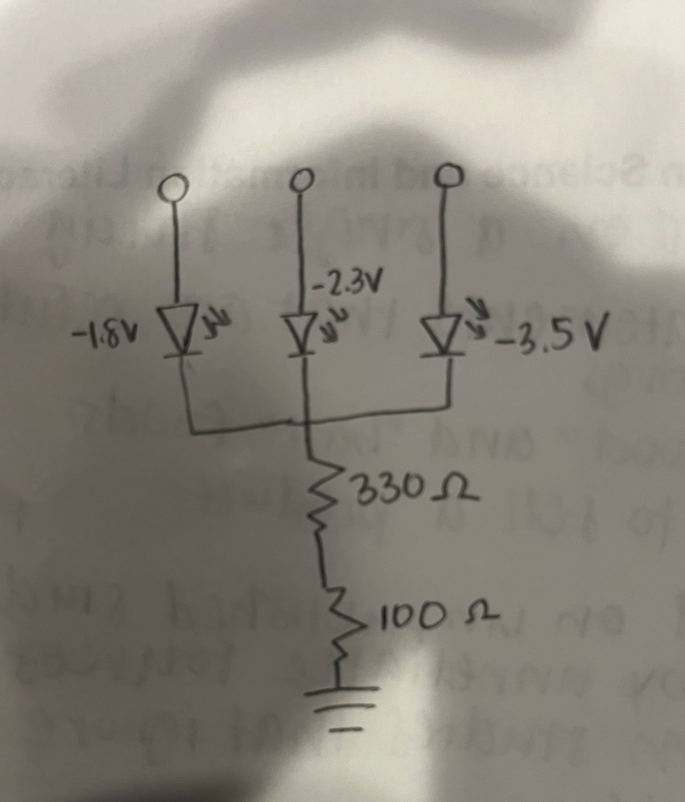

Jency's Assignment 1!

Since I had Red, Green, and Yellow LEDs, I knew that I had to calculate the appropriate resistance for each one. I subtracted each of the voltages (respectively 1.8 V, 2.3 V, and 3.5 V) from 5 V and plugged it into the V = IR equation, where the V was either 3.2 V, 2.7 V, or 1.5 V. I was 0.02 A, and I divided each of the respective voltages by 0.03 to get final resistances of 160, 135, and 75, which added to a total resistance of 370. Thus, I picked the 330 and 100 resistors to put in my circuit.

Here is a video link for assignment 1! Video Link
Here is all the documentation for assignment 1!
Arduino Code